Tests
10 test(s) passed
1 test(s) failed, 0 others
Steps
338 step(s) passed
2 step(s) failed, 0 others
Tests
-
HomepageHeader May 31, 2022 01:28:30 PM passMay 31, 2022 01:28:30 PM May 31, 2022 01:28:44 PM 0h 0m 14s+0ms
-
C15 - When you select Teach, does a submenu open below the Teach button?
May 31, 2022 05:13:51 PM 1h 16m 34s+300ms passStatus Timestamp Details check_circle 1:28:41 PM The Element teach clicked 
check_circle 1:28:44 PM Teachsubmenu display successfully 
-
-
HomepageHeader May 31, 2022 01:31:32 PM passMay 31, 2022 01:31:32 PM May 31, 2022 01:31:44 PM 0h 0m 12s+0ms
-
C15 - When you select Teach, does a submenu open below the Teach button?
May 31, 2022 05:13:51 PM 1h 16m 34s+309ms passStatus Timestamp Details check_circle 1:31:41 PM The Element teach clicked 
check_circle 1:31:44 PM Teachsubmenu display successfully 
-
-
HomepageHeaderplay May 31, 2022 01:35:27 PM passMay 31, 2022 01:35:27 PM May 31, 2022 01:35:41 PM 0h 0m 14s+0ms
-
C8 - When you select Play, does a submenu open below the Play button?
May 31, 2022 05:13:51 PM 1h 16m 34s+314ms passStatus Timestamp Details check_circle 1:35:38 PM The Element play clicked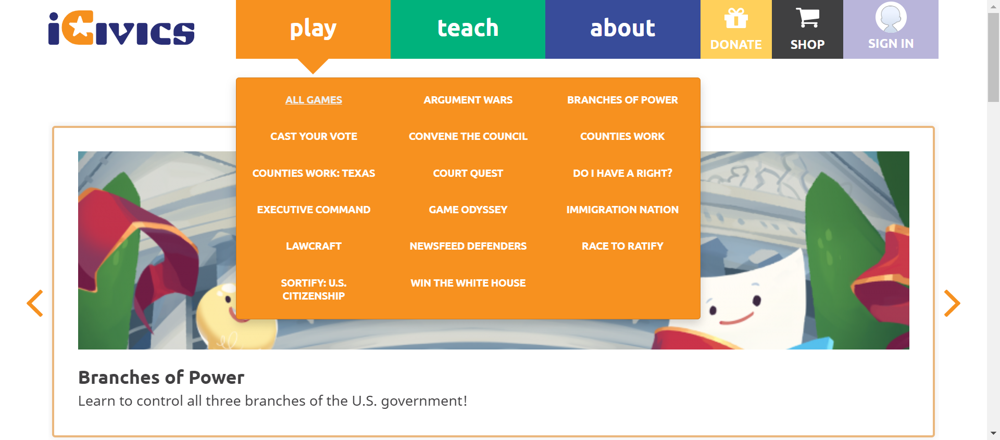 check_circle 1:35:41 PM playsubmenu display successfully 
-
-
HomepageHeader May 31, 2022 02:43:51 PM passMay 31, 2022 02:43:51 PM May 31, 2022 02:44:05 PM 0h 0m 14s+0ms
-
C16 - Do you see links to Search Our Library, Scope and Sequence, Professional Development, Get Started, Educatory Community, and FAQ in the submenu?
May 31, 2022 05:13:51 PM 1h 16m 34s+318ms passStatus Timestamp Details check_circle 2:44:01 PM The Element teach clicked 
check_circle 2:44:05 PM Teachsubmenu display successfully 
-
-
HomepageHeader May 31, 2022 03:21:50 PM passMay 31, 2022 03:21:50 PM May 31, 2022 03:23:18 PM 0h 1m 28s+0ms
-
C17 - When you select a link in the submenu, are you navigated to the appropriate page?
May 31, 2022 05:13:51 PM 1h 16m 34s+323ms passStatus Timestamp Details check_circle 3:22:01 PM The mouse over by xpath : (//a[@title='Search Our Library'])[3] is performed. 
check_circle 3:22:02 PM The element [[ChromeDriver: chrome on WINDOWS (537b3b6d1f9e641d10ff6b91b4d7c920)] -> xpath: (//li[@class='first search our library']/a)[2]] is visible 
check_circle 3:22:02 PM The expected text contains the actual SEARCH OUR LIBRARY 
check_circle 3:22:23 PM The Element SEARCH OUR LIBRARY clicked 
check_circle 3:22:23 PM The expected https://staging.d9.icivics.org/teachers url as same as the https://staging.d9.icivics.org/teachers actual url. 
check_circle 3:22:24 PM The expected text contains the actual CONTENT SEARCH 
check_circle 3:22:24 PM The mouse over by xpath : (//a[@title='Search Our Library'])[3] is performed. 
check_circle 3:22:24 PM The element [[ChromeDriver: chrome on WINDOWS (537b3b6d1f9e641d10ff6b91b4d7c920)] -> xpath: (//a[@title='Scope and Sequence'])[2]] is visible 
check_circle 3:22:25 PM The expected text contains the actual SCOPE & SEQUENCE 
check_circle 3:22:30 PM The Element SCOPE & SEQUENCE clicked 
check_circle 3:22:30 PM The expected https://staging.d9.icivics.org/user/login?destination=/viewpdf%3Fpath%3D/sites/default/files/Scope%2520%2526%2520Sequence%25205.13.pdf url as same as the https://staging.d9.icivics.org/user/login?destination=/viewpdf%3Fpath%3D/sites/default/files/Scope%2520%2526%2520Sequence%25205.13.pdf actual url. 
check_circle 3:22:30 PM The expected text contains the actual Log in to iCivics 
check_circle 3:22:31 PM The mouse over by xpath : (//a[@title='Search Our Library'])[3] is performed. 
check_circle 3:22:31 PM The element [[ChromeDriver: chrome on WINDOWS (537b3b6d1f9e641d10ff6b91b4d7c920)] -> xpath: (//li[@class='professional development']//a)[2]] is visible 
check_circle 3:22:31 PM The expected text contains the actual PROFESSIONAL DEVELOPMENT 
check_circle 3:22:35 PM The Element PROFESSIONAL DEVELOPMENT clicked 
check_circle 3:22:35 PM The expected https://staging.d9.icivics.org/products/professional-development url as same as the https://staging.d9.icivics.org/products/professional-development actual url. 
check_circle 3:22:35 PM The expected text contains the actual Professional Development 
check_circle 3:22:36 PM The mouse over by xpath : (//a[@title='Search Our Library'])[3] is performed. 
check_circle 3:22:36 PM The element [[ChromeDriver: chrome on WINDOWS (537b3b6d1f9e641d10ff6b91b4d7c920)] -> xpath: (//li[@class='get started']//a)[2]] is visible 
check_circle 3:22:36 PM The expected text contains the actual GET STARTED 
check_circle 3:22:51 PM The Element GET STARTED clicked 
check_circle 3:22:51 PM The expected https://staging.d9.icivics.org/getstarted url as same as the https://staging.d9.icivics.org/getstarted actual url. 
check_circle 3:22:52 PM The expected text contains the actual Welcome to iCivics!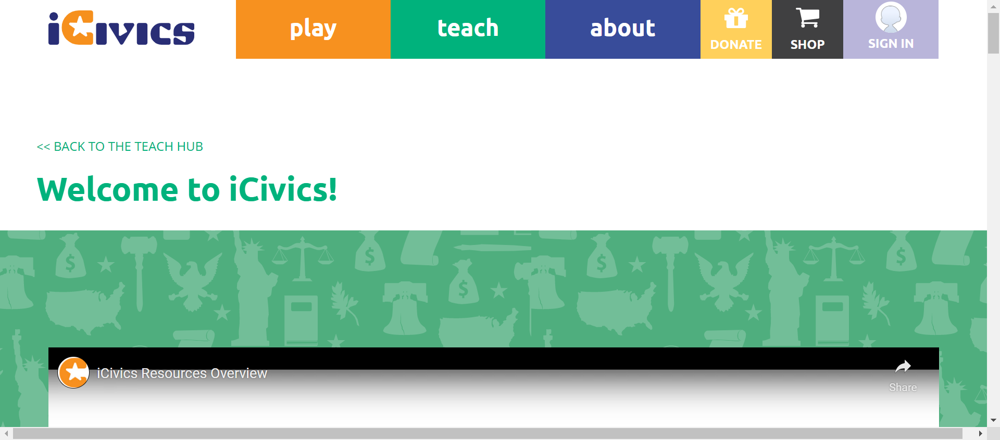 check_circle 3:22:52 PM The mouse over by xpath : (//a[@title='Search Our Library'])[3] is performed.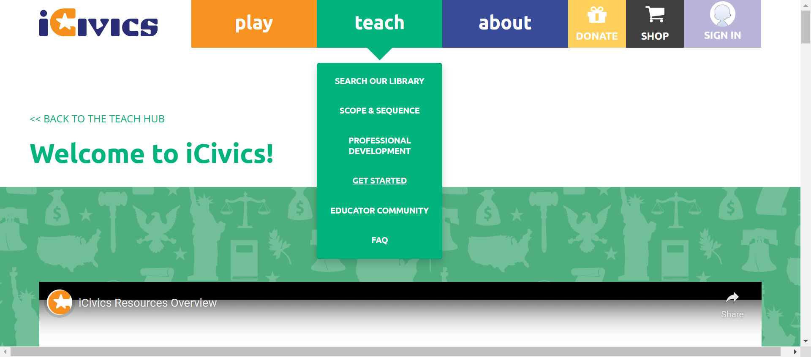 check_circle 3:22:53 PM The element [[ChromeDriver: chrome on WINDOWS (537b3b6d1f9e641d10ff6b91b4d7c920)] -> xpath: (//li[@class='educator community']//a)[2]] is visible 
check_circle 3:22:53 PM The expected text contains the actual EDUCATOR COMMUNITY 
check_circle 3:23:03 PM The Element EDUCATOR COMMUNITY clicked 
check_circle 3:23:09 PM The mouse over by xpath : (//a[@title='Search Our Library'])[3] is performed. 
check_circle 3:23:10 PM The element [[ChromeDriver: chrome on WINDOWS (537b3b6d1f9e641d10ff6b91b4d7c920)] -> xpath: (//li[@class='last faq']//a)[2]] is visible 
check_circle 3:23:10 PM The expected text contains the actual FAQ 
check_circle 3:23:17 PM The Element FAQ clicked 
check_circle 3:23:17 PM The expected https://icivics.zendesk.com/hc/en-us url as same as the https://icivics.zendesk.com/hc/en-us actual url. 
check_circle 3:23:18 PM The expected text contains the actual Getting Started 
check_circle 3:23:18 PM All links in the teach dropdown is verified sucessfully 
-
-
HomepageHeader May 31, 2022 03:31:37 PM passMay 31, 2022 03:31:37 PM May 31, 2022 03:33:34 PM 0h 1m 57s+0ms
-
C17 - When you select a link in the submenu, are you navigated to the appropriate page?
May 31, 2022 05:13:51 PM 1h 16m 34s+342ms passStatus Timestamp Details check_circle 3:31:49 PM The mouse over by xpath : (//a[@title='Search Our Library'])[3] is performed. 
check_circle 3:31:49 PM The element [[ChromeDriver: chrome on WINDOWS (039557ce05b421fe3500b7e2befdb1c1)] -> xpath: (//li[@class='first search our library']/a)[2]] is visible 
check_circle 3:31:50 PM The expected text contains the actual SEARCH OUR LIBRARY 
check_circle 3:32:11 PM The Element SEARCH OUR LIBRARY clicked 
check_circle 3:32:11 PM The expected https://staging.d9.icivics.org/teachers url as same as the https://staging.d9.icivics.org/teachers actual url. 
check_circle 3:32:11 PM The expected text contains the actual CONTENT SEARCH 
check_circle 3:32:12 PM The mouse over by xpath : (//a[@title='Search Our Library'])[3] is performed. 
check_circle 3:32:12 PM The element [[ChromeDriver: chrome on WINDOWS (039557ce05b421fe3500b7e2befdb1c1)] -> xpath: (//a[@title='Scope and Sequence'])[2]] is visible 
check_circle 3:32:12 PM The expected text contains the actual SCOPE & SEQUENCE 
check_circle 3:32:16 PM The Element SCOPE & SEQUENCE clicked check_circle 3:32:16 PM The expected https://staging.d9.icivics.org/user/login?destination=/viewpdf%3Fpath%3D/sites/default/files/Scope%2520%2526%2520Sequence%25205.13.pdf url as same as the https://staging.d9.icivics.org/user/login?destination=/viewpdf%3Fpath%3D/sites/default/files/Scope%2520%2526%2520Sequence%25205.13.pdf actual url. 
check_circle 3:32:17 PM The expected text contains the actual Log in to iCivics check_circle 3:32:17 PM The mouse over by xpath : (//a[@title='Search Our Library'])[3] is performed. 
check_circle 3:32:18 PM The element [[ChromeDriver: chrome on WINDOWS (039557ce05b421fe3500b7e2befdb1c1)] -> xpath: (//li[@class='professional development']//a)[2]] is visible 
check_circle 3:32:18 PM The expected text contains the actual PROFESSIONAL DEVELOPMENT 
check_circle 3:32:37 PM The Element PROFESSIONAL DEVELOPMENT clicked 
check_circle 3:32:38 PM The expected https://staging.d9.icivics.org/products/professional-development url as same as the https://staging.d9.icivics.org/products/professional-development actual url. 
check_circle 3:32:38 PM The expected text contains the actual Professional Development 
check_circle 3:32:38 PM The mouse over by xpath : (//a[@title='Search Our Library'])[3] is performed. 
check_circle 3:32:39 PM The element [[ChromeDriver: chrome on WINDOWS (039557ce05b421fe3500b7e2befdb1c1)] -> xpath: (//li[@class='get started']//a)[2]] is visible 
check_circle 3:32:39 PM The expected text contains the actual GET STARTED 
check_circle 3:33:05 PM The Element GET STARTED clicked 
check_circle 3:33:05 PM The expected https://staging.d9.icivics.org/getstarted url as same as the https://staging.d9.icivics.org/getstarted actual url. 
check_circle 3:33:06 PM The expected text contains the actual Welcome to iCivics! 
check_circle 3:33:06 PM The mouse over by xpath : (//a[@title='Search Our Library'])[3] is performed. 
check_circle 3:33:06 PM The element [[ChromeDriver: chrome on WINDOWS (039557ce05b421fe3500b7e2befdb1c1)] -> xpath: (//li[@class='educator community']//a)[2]] is visible 
check_circle 3:33:07 PM The expected text contains the actual EDUCATOR COMMUNITY 
check_circle 3:33:15 PM The Element EDUCATOR COMMUNITY clicked 
check_circle 3:33:22 PM The mouse over by xpath : (//a[@title='Search Our Library'])[3] is performed. 
check_circle 3:33:22 PM The element [[ChromeDriver: chrome on WINDOWS (039557ce05b421fe3500b7e2befdb1c1)] -> xpath: (//li[@class='last faq']//a)[2]] is visible 
check_circle 3:33:22 PM The expected text contains the actual FAQ 
check_circle 3:33:34 PM The Element FAQ clicked 
check_circle 3:33:34 PM The expected https://icivics.zendesk.com/hc/en-us url as same as the https://icivics.zendesk.com/hc/en-us actual url. 
check_circle 3:33:34 PM The expected text contains the actual Getting Started 
check_circle 3:33:34 PM All links in the teach dropdown is verified sucessfully 
-
-
HomepageHeader May 31, 2022 03:37:08 PM passMay 31, 2022 03:37:08 PM May 31, 2022 03:39:05 PM 0h 1m 57s+0ms
-
C17 - When you select a link in the submenu, are you navigated to the appropriate page?
May 31, 2022 05:13:51 PM 1h 16m 34s+359ms passStatus Timestamp Details check_circle 3:37:18 PM The mouse over by xpath : (//a[@title='Search Our Library'])[3] is performed. 
check_circle 3:37:18 PM The element [[ChromeDriver: chrome on WINDOWS (807e29774c3681c44e6a8675ce815bb2)] -> xpath: (//li[@class='first search our library']/a)[2]] is visible 
check_circle 3:37:19 PM The expected text contains the actual SEARCH OUR LIBRARY 
check_circle 3:37:40 PM The Element SEARCH OUR LIBRARY clicked 
check_circle 3:37:40 PM The expected https://staging.d9.icivics.org/teachers url as same as the https://staging.d9.icivics.org/teachers actual url. 
check_circle 3:37:41 PM The expected text contains the actual CONTENT SEARCH 
check_circle 3:37:41 PM The mouse over by xpath : (//a[@title='Search Our Library'])[3] is performed. 
check_circle 3:37:41 PM The element [[ChromeDriver: chrome on WINDOWS (807e29774c3681c44e6a8675ce815bb2)] -> xpath: (//a[@title='Scope and Sequence'])[2]] is visible 
check_circle 3:37:42 PM The expected text contains the actual SCOPE & SEQUENCE 
check_circle 3:37:46 PM The Element SCOPE & SEQUENCE clicked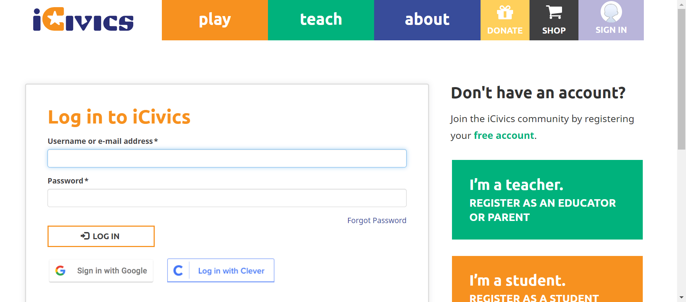 check_circle 3:37:46 PM The expected https://staging.d9.icivics.org/user/login?destination=/viewpdf%3Fpath%3D/sites/default/files/Scope%2520%2526%2520Sequence%25205.13.pdf url as same as the https://staging.d9.icivics.org/user/login?destination=/viewpdf%3Fpath%3D/sites/default/files/Scope%2520%2526%2520Sequence%25205.13.pdf actual url. 
check_circle 3:37:47 PM The expected text contains the actual Log in to iCivics check_circle 3:37:47 PM The mouse over by xpath : (//a[@title='Search Our Library'])[3] is performed. 
check_circle 3:37:47 PM The element [[ChromeDriver: chrome on WINDOWS (807e29774c3681c44e6a8675ce815bb2)] -> xpath: (//li[@class='professional development']//a)[2]] is visible 
check_circle 3:37:48 PM The expected text contains the actual PROFESSIONAL DEVELOPMENT 
check_circle 3:38:07 PM The Element PROFESSIONAL DEVELOPMENT clicked 
check_circle 3:38:07 PM The expected https://staging.d9.icivics.org/products/professional-development url as same as the https://staging.d9.icivics.org/products/professional-development actual url. 
check_circle 3:38:08 PM The expected text contains the actual Professional Development 
check_circle 3:38:08 PM The mouse over by xpath : (//a[@title='Search Our Library'])[3] is performed. 
check_circle 3:38:09 PM The element [[ChromeDriver: chrome on WINDOWS (807e29774c3681c44e6a8675ce815bb2)] -> xpath: (//li[@class='get started']//a)[2]] is visible 
check_circle 3:38:09 PM The expected text contains the actual GET STARTED 
check_circle 3:38:35 PM The Element GET STARTED clicked 
check_circle 3:38:36 PM The expected https://staging.d9.icivics.org/getstarted url as same as the https://staging.d9.icivics.org/getstarted actual url. 
check_circle 3:38:36 PM The expected text contains the actual Welcome to iCivics! 
check_circle 3:38:36 PM The mouse over by xpath : (//a[@title='Search Our Library'])[3] is performed. 
check_circle 3:38:36 PM The element [[ChromeDriver: chrome on WINDOWS (807e29774c3681c44e6a8675ce815bb2)] -> xpath: (//li[@class='educator community']//a)[2]] is visible 
check_circle 3:38:37 PM The expected text contains the actual EDUCATOR COMMUNITY 
check_circle 3:38:51 PM The Element EDUCATOR COMMUNITY clicked 
check_circle 3:38:58 PM The mouse over by xpath : (//a[@title='Search Our Library'])[3] is performed. 
check_circle 3:38:58 PM The element [[ChromeDriver: chrome on WINDOWS (807e29774c3681c44e6a8675ce815bb2)] -> xpath: (//li[@class='last faq']//a)[2]] is visible 
check_circle 3:38:58 PM The expected text contains the actual FAQ 
check_circle 3:39:05 PM The Element FAQ clicked 
check_circle 3:39:05 PM The expected https://icivics.zendesk.com/hc/en-us url as same as the https://icivics.zendesk.com/hc/en-us actual url. 
check_circle 3:39:05 PM The expected text contains the actual Getting Started 
check_circle 3:39:05 PM All links in the teach dropdown is verified sucessfully 
-
-
Educator Registration General May 31, 2022 03:45:19 PM failMay 31, 2022 03:45:19 PM May 31, 2022 03:55:09 PM 0h 9m 50s+0ms
-
C323 - Do all buttons/links navigate you to the appropriate page?
May 31, 2022 05:13:51 PM 1h 16m 34s+378ms failStatus Timestamp Details check_circle 3:45:28 PM The expected https://staging.d9.icivics.org/user/register?role=teacher url as same as the https://staging.d9.icivics.org/user/register?role=teacher actual url.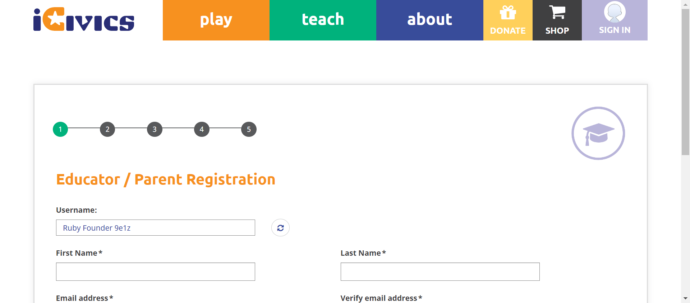 check_circle 3:45:29 PM The mouse over by xpath : (//*[@title='Play Games'])[3] is performed. 
check_circle 3:45:30 PM The element [[ChromeDriver: chrome on WINDOWS (b4c8e1b0695411771d2a317cca41a5bc)] -> xpath: (//li[contains(@class,'first all')]//a)[2]] is visible 
check_circle 3:45:30 PM The expected text contains the actual ALL GAMES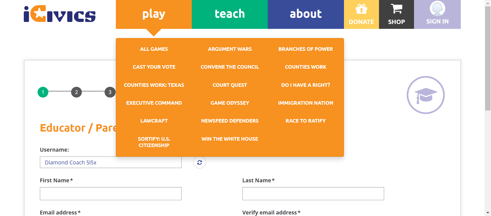 check_circle 3:45:51 PM The Element ALL GAMES clicked 
check_circle 3:45:52 PM The expected https://staging.d9.icivics.org/games url as same as the https://staging.d9.icivics.org/games actual url. 
check_circle 3:45:53 PM The mouse over by xpath : (//*[@title='Play Games'])[3] is performed. 
check_circle 3:45:53 PM The element [[ChromeDriver: chrome on WINDOWS (b4c8e1b0695411771d2a317cca41a5bc)] -> xpath: (//li[contains(@class,'cast')]//a)[2]] is visible 
check_circle 3:45:53 PM The expected text contains the actual CAST YOUR VOTE 
check_circle 3:46:19 PM The Element CAST YOUR VOTE clicked 
check_circle 3:46:20 PM The expected https://staging.d9.icivics.org/games/cast-your-vote url as same as the https://staging.d9.icivics.org/games/cast-your-vote actual url. 
check_circle 3:46:21 PM The expected text contains the actual Cast Your Vote 
check_circle 3:46:21 PM The mouse over by xpath : (//*[@title='Play Games'])[3] is performed. 
check_circle 3:46:22 PM The element [[ChromeDriver: chrome on WINDOWS (b4c8e1b0695411771d2a317cca41a5bc)] -> xpath: (//li[@class='counties work: texas']/a)[2]] is visible 
check_circle 3:46:23 PM The expected text contains the actual COUNTIES WORK: TEXAS 
check_circle 3:46:53 PM The Element COUNTIES WORK: TEXAS clicked 
check_circle 3:46:54 PM The expected https://staging.d9.icivics.org/games/counties-work-texas url as same as the https://staging.d9.icivics.org/games/counties-work-texas actual url. 
check_circle 3:46:54 PM The expected text contains the actual Counties Work: Texas 
check_circle 3:46:55 PM The mouse over by xpath : (//*[@title='Play Games'])[3] is performed. 
check_circle 3:46:55 PM The element [[ChromeDriver: chrome on WINDOWS (b4c8e1b0695411771d2a317cca41a5bc)] -> xpath: (//li[@class='executive command']/a)[2]] is visible 
check_circle 3:46:55 PM The expected text contains the actual EXECUTIVE COMMAND 
check_circle 3:47:25 PM The Element EXECUTIVE COMMAND clicked 
check_circle 3:47:25 PM The expected https://staging.d9.icivics.org/games/executive-command url as same as the https://staging.d9.icivics.org/games/executive-command actual url. 
check_circle 3:47:25 PM The expected text contains the actual Executive Command 
check_circle 3:47:26 PM The mouse over by xpath : (//*[@title='Play Games'])[3] is performed. 
check_circle 3:47:26 PM The element [[ChromeDriver: chrome on WINDOWS (b4c8e1b0695411771d2a317cca41a5bc)] -> xpath: (//li[@class='lawcraft']/a)[2]] is visible 
check_circle 3:47:27 PM The expected text contains the actual LAWCRAFT 
check_circle 3:47:52 PM The Element LAWCRAFT clicked 
check_circle 3:47:52 PM The expected https://staging.d9.icivics.org/games/lawcraft url as same as the https://staging.d9.icivics.org/games/lawcraft actual url. 
check_circle 3:47:53 PM The expected text contains the actual LawCraft 
check_circle 3:47:53 PM The mouse over by xpath : (//*[@title='Play Games'])[3] is performed. 
check_circle 3:47:54 PM The element [[ChromeDriver: chrome on WINDOWS (b4c8e1b0695411771d2a317cca41a5bc)] -> xpath: (//li[@class='sortify: u.s. citizenship']/a)[2]] is visible 
check_circle 3:47:54 PM The expected text contains the actual SORTIFY: U.S. CITIZENSHIP 
check_circle 3:48:19 PM The Element SORTIFY: U.S. CITIZENSHIP clicked 
check_circle 3:48:20 PM The expected https://staging.d9.icivics.org/games/sortify-us-citizenship url as same as the https://staging.d9.icivics.org/games/sortify-us-citizenship actual url. 
check_circle 3:48:20 PM The expected text contains the actual Sortify: U.S. Citizenship 
check_circle 3:48:21 PM The mouse over by xpath : (//*[@title='Play Games'])[3] is performed. 
check_circle 3:48:21 PM The element [[ChromeDriver: chrome on WINDOWS (b4c8e1b0695411771d2a317cca41a5bc)] -> xpath: (//li[@class='argument wars']/a)[2]] is visible 
check_circle 3:48:21 PM The expected text contains the actual ARGUMENT WARS 
check_circle 3:48:45 PM The Element ARGUMENT WARS clicked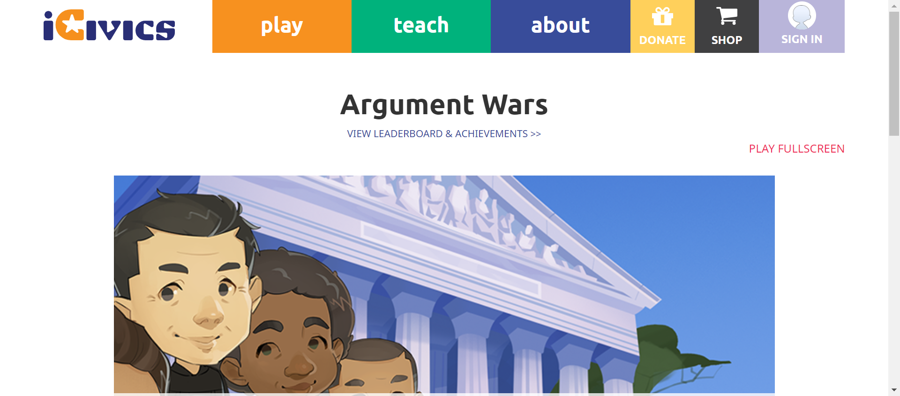 check_circle 3:48:45 PM The expected https://staging.d9.icivics.org/games/argument-wars url as same as the https://staging.d9.icivics.org/games/argument-wars actual url. 
check_circle 3:48:46 PM The expected text contains the actual Argument Wars 
check_circle 3:48:47 PM The mouse over by xpath : (//*[@title='Play Games'])[3] is performed. 
check_circle 3:48:47 PM The element [[ChromeDriver: chrome on WINDOWS (b4c8e1b0695411771d2a317cca41a5bc)] -> xpath: (//li[@class='convene the council']/a)[2]] is visible 
check_circle 3:48:48 PM The expected text contains the actual CONVENE THE COUNCIL 
check_circle 3:49:13 PM The Element CONVENE THE COUNCIL clicked 
check_circle 3:49:14 PM The expected https://staging.d9.icivics.org/games/convene-council url as same as the https://staging.d9.icivics.org/games/convene-council actual url. 
check_circle 3:49:14 PM The expected text contains the actual Convene the Council 
check_circle 3:49:15 PM The mouse over by xpath : (//*[@title='Play Games'])[3] is performed. 
check_circle 3:49:16 PM The element [[ChromeDriver: chrome on WINDOWS (b4c8e1b0695411771d2a317cca41a5bc)] -> xpath: (//li[@class='court quest']/a)[2]] is visible 
check_circle 3:49:16 PM The expected text contains the actual COURT QUEST 
check_circle 3:49:39 PM The Element COURT QUEST clicked 
check_circle 3:49:40 PM The expected https://staging.d9.icivics.org/games/court-quest url as same as the https://staging.d9.icivics.org/games/court-quest actual url. 
check_circle 3:49:40 PM The expected text contains the actual Court Quest 
check_circle 3:49:41 PM The mouse over by xpath : (//*[@title='Play Games'])[3] is performed.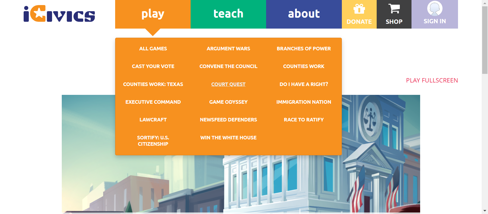 check_circle 3:49:42 PM The element [[ChromeDriver: chrome on WINDOWS (b4c8e1b0695411771d2a317cca41a5bc)] -> xpath: (//li[@class='game odyssey']/a)[2]] is visible 
check_circle 3:49:42 PM The expected text contains the actual GAME ODYSSEY 
check_circle 3:50:09 PM The Element GAME ODYSSEY clicked 
check_circle 3:50:09 PM The expected https://staging.d9.icivics.org/game-odyssey url as same as the https://staging.d9.icivics.org/game-odyssey actual url. 
check_circle 3:50:10 PM The expected text contains the actual iCivics Game Odyssey check_circle 3:50:15 PM The mouse over by xpath : (//*[@title='Play Games'])[3] is performed. 
check_circle 3:50:15 PM The element [[ChromeDriver: chrome on WINDOWS (b4c8e1b0695411771d2a317cca41a5bc)] -> xpath: (//li[@class='newsfeed defenders']//a)[2]] is visible check_circle 3:50:15 PM The expected text contains the actual NEWSFEED DEFENDERS 
check_circle 3:50:33 PM The Element NEWSFEED DEFENDERS clicked 
check_circle 3:50:33 PM The expected https://staging.d9.icivics.org/games/newsfeed-defenders url as same as the https://staging.d9.icivics.org/games/newsfeed-defenders actual url. 
check_circle 3:50:33 PM The expected text contains the actual NewsFeed Defenders 
check_circle 3:50:34 PM The mouse over by xpath : (//*[@title='Play Games'])[3] is performed. 
check_circle 3:50:34 PM The element [[ChromeDriver: chrome on WINDOWS (b4c8e1b0695411771d2a317cca41a5bc)] -> xpath: (//li[contains(@class,'last win')]//a)[2]] is visible 
check_circle 3:50:34 PM The expected text contains the actual WIN THE WHITE HOUSE 
check_circle 3:51:02 PM The Element WIN THE WHITE HOUSE clicked 
check_circle 3:51:02 PM The expected https://staging.d9.icivics.org/games/win-white-house url as same as the https://staging.d9.icivics.org/games/win-white-house actual url. 
check_circle 3:51:03 PM The expected text contains the actual Win the White House 
check_circle 3:51:03 PM The mouse over by xpath : (//*[@title='Play Games'])[3] is performed. 
check_circle 3:51:03 PM The element [[ChromeDriver: chrome on WINDOWS (b4c8e1b0695411771d2a317cca41a5bc)] -> xpath: (//li[@class='branches of power']/a)[2]] is visible 
check_circle 3:51:04 PM The expected text contains the actual BRANCHES OF POWER 
check_circle 3:51:30 PM The Element BRANCHES OF POWER clicked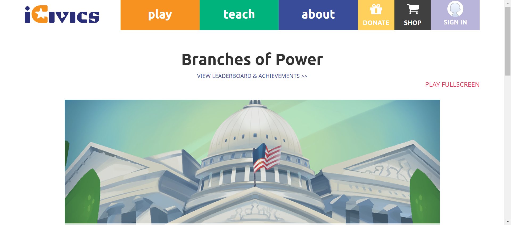 check_circle 3:51:31 PM The expected https://staging.d9.icivics.org/games/branches-power url as same as the https://staging.d9.icivics.org/games/branches-power actual url. 
check_circle 3:51:31 PM The expected text contains the actual Branches of Power 
check_circle 3:51:32 PM The mouse over by xpath : (//*[@title='Play Games'])[3] is performed. 
check_circle 3:51:32 PM The element [[ChromeDriver: chrome on WINDOWS (b4c8e1b0695411771d2a317cca41a5bc)] -> xpath: (//li[@class='counties work']/a)[2]] is visible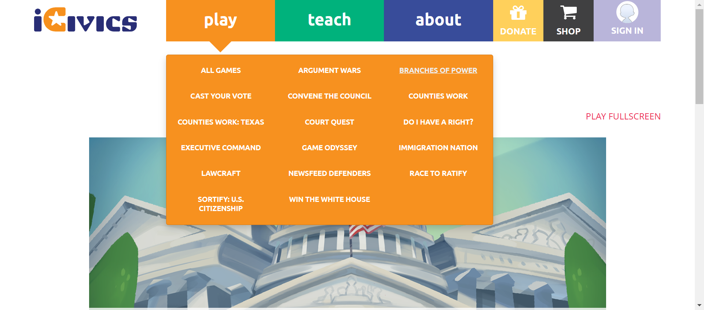 check_circle 3:51:33 PM The expected text contains the actual COUNTIES WORK 
check_circle 3:51:36 PM The Element COUNTIES WORK clicked 
check_circle 3:51:36 PM The expected https://staging.d9.icivics.org/games/counties-work url as same as the https://staging.d9.icivics.org/games/counties-work actual url. 
check_circle 3:51:37 PM The expected text contains the actual Counties Work 
check_circle 3:51:37 PM The mouse over by xpath : (//*[@title='Play Games'])[3] is performed. 
check_circle 3:51:37 PM The element [[ChromeDriver: chrome on WINDOWS (b4c8e1b0695411771d2a317cca41a5bc)] -> xpath: (//li[@class='do i have a right?'])[2]] is visible 
check_circle 3:51:38 PM The expected text contains the actual DO I HAVE A RIGHT? 
check_circle 3:51:57 PM The Element DO I HAVE A RIGHT? clicked 
check_circle 3:52:01 PM The expected https://staging.d9.icivics.org/games/do-i-have-right url as same as the https://staging.d9.icivics.org/games/do-i-have-right actual url. 
check_circle 3:52:02 PM The expected text contains the actual Do I Have a Right? 
check_circle 3:52:03 PM The mouse over by xpath : (//*[@title='Play Games'])[3] is performed. 
check_circle 3:52:03 PM The element [[ChromeDriver: chrome on WINDOWS (b4c8e1b0695411771d2a317cca41a5bc)] -> xpath: (//li[@class='immigration nation']/a)[2]] is visible 
check_circle 3:52:03 PM The expected text contains the actual IMMIGRATION NATION 
check_circle 3:52:30 PM The Element IMMIGRATION NATION clicked 
check_circle 3:52:35 PM The expected https://staging.d9.icivics.org/games/immigration-nation url as same as the https://staging.d9.icivics.org/games/immigration-nation actual url. 
check_circle 3:52:35 PM The expected text contains the actual Immigration Nation 
check_circle 3:52:36 PM The mouse over by xpath : (//*[@title='Play Games'])[3] is performed. 
check_circle 3:52:36 PM The element [[ChromeDriver: chrome on WINDOWS (b4c8e1b0695411771d2a317cca41a5bc)] -> xpath: (//li[@class='race to ratify']/a)[2]] is visible 
check_circle 3:52:37 PM The expected text contains the actual RACE TO RATIFY 
check_circle 3:53:05 PM The Element RACE TO RATIFY clicked 
check_circle 3:53:06 PM The expected https://staging.d9.icivics.org/games/race-ratify url as same as the https://staging.d9.icivics.org/games/race-ratify actual url. 
check_circle 3:53:06 PM The expected text contains the actual Race to Ratify 
check_circle 3:53:07 PM All links in the play dropdown is verified sucessfully 
check_circle 3:53:10 PM The mouse over by xpath : (//a[@title='Search Our Library'])[3] is performed.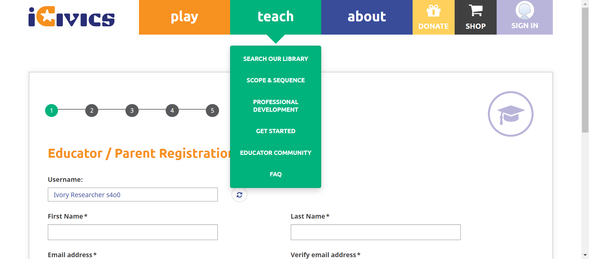 check_circle 3:53:10 PM The element [[ChromeDriver: chrome on WINDOWS (b4c8e1b0695411771d2a317cca41a5bc)] -> xpath: (//li[@class='first search our library']/a)[2]] is visible check_circle 3:53:11 PM The expected text contains the actual SEARCH OUR LIBRARY 
check_circle 3:53:31 PM The Element SEARCH OUR LIBRARY clicked 
check_circle 3:53:32 PM The expected https://staging.d9.icivics.org/teachers url as same as the https://staging.d9.icivics.org/teachers actual url. 
check_circle 3:53:32 PM The expected text contains the actual CONTENT SEARCH 
check_circle 3:53:32 PM The mouse over by xpath : (//a[@title='Search Our Library'])[3] is performed. 
check_circle 3:53:33 PM The element [[ChromeDriver: chrome on WINDOWS (b4c8e1b0695411771d2a317cca41a5bc)] -> xpath: (//a[@title='Scope and Sequence'])[2]] is visible 
check_circle 3:53:33 PM The expected text contains the actual SCOPE & SEQUENCE 
check_circle 3:53:36 PM The Element SCOPE & SEQUENCE clicked check_circle 3:53:36 PM The expected https://staging.d9.icivics.org/user/login?destination=/viewpdf%3Fpath%3D/sites/default/files/Scope%2520%2526%2520Sequence%25205.13.pdf url as same as the https://staging.d9.icivics.org/user/login?destination=/viewpdf%3Fpath%3D/sites/default/files/Scope%2520%2526%2520Sequence%25205.13.pdf actual url. 
check_circle 3:53:36 PM The expected text contains the actual Log in to iCivics check_circle 3:53:37 PM The mouse over by xpath : (//a[@title='Search Our Library'])[3] is performed. check_circle 3:53:37 PM The element [[ChromeDriver: chrome on WINDOWS (b4c8e1b0695411771d2a317cca41a5bc)] -> xpath: (//li[@class='professional development']//a)[2]] is visible 
check_circle 3:53:37 PM The expected text contains the actual PROFESSIONAL DEVELOPMENT 
check_circle 3:53:39 PM The Element PROFESSIONAL DEVELOPMENT clicked 
check_circle 3:53:40 PM The expected https://staging.d9.icivics.org/products/professional-development url as same as the https://staging.d9.icivics.org/products/professional-development actual url. 
check_circle 3:53:40 PM The expected text contains the actual Professional Development 
check_circle 3:53:40 PM The mouse over by xpath : (//a[@title='Search Our Library'])[3] is performed. 
check_circle 3:53:41 PM The element [[ChromeDriver: chrome on WINDOWS (b4c8e1b0695411771d2a317cca41a5bc)] -> xpath: (//li[@class='get started']//a)[2]] is visible 
check_circle 3:53:41 PM The expected text contains the actual GET STARTED 
check_circle 3:53:57 PM The Element GET STARTED clicked 
check_circle 3:53:57 PM The expected https://staging.d9.icivics.org/getstarted url as same as the https://staging.d9.icivics.org/getstarted actual url. 
check_circle 3:53:58 PM The expected text contains the actual Welcome to iCivics! 
check_circle 3:53:58 PM The mouse over by xpath : (//a[@title='Search Our Library'])[3] is performed. 
check_circle 3:53:58 PM The element [[ChromeDriver: chrome on WINDOWS (b4c8e1b0695411771d2a317cca41a5bc)] -> xpath: (//li[@class='educator community']//a)[2]] is visible 
check_circle 3:53:59 PM The expected text contains the actual EDUCATOR COMMUNITY 
check_circle 3:54:04 PM The Element EDUCATOR COMMUNITY clicked 
check_circle 3:54:09 PM The mouse over by xpath : (//a[@title='Search Our Library'])[3] is performed. 
check_circle 3:54:09 PM The element [[ChromeDriver: chrome on WINDOWS (b4c8e1b0695411771d2a317cca41a5bc)] -> xpath: (//li[@class='last faq']//a)[2]] is visible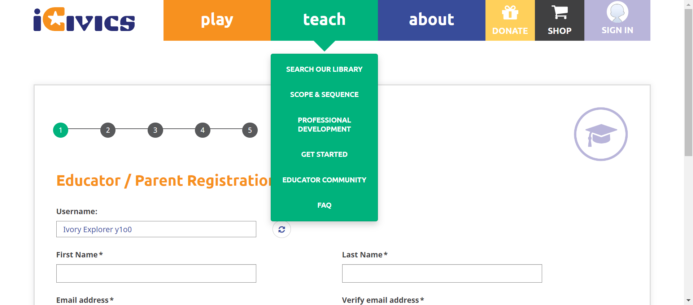 check_circle 3:54:09 PM The expected text contains the actual FAQ 
check_circle 3:54:13 PM The Element FAQ clicked 
check_circle 3:54:13 PM The expected https://icivics.zendesk.com/hc/en-us url as same as the https://icivics.zendesk.com/hc/en-us actual url. 
check_circle 3:54:13 PM The expected text contains the actual Getting Started 
check_circle 3:54:13 PM All links in the teach dropdown is verified sucessfully 
check_circle 3:54:16 PM The mouse over by xpath : (//a[@href='/about'])[3] is performed. check_circle 3:54:16 PM The element [[ChromeDriver: chrome on WINDOWS (b4c8e1b0695411771d2a317cca41a5bc)] -> xpath: (//li[@class='first about icivics']/a)[2]] is visible 
check_circle 3:54:16 PM The expected text contains the actual ABOUT ICIVICS check_circle 3:54:27 PM The Element ABOUT ICIVICS clicked 
check_circle 3:54:28 PM The expected https://staging.d9.icivics.org/about url as same as the https://staging.d9.icivics.org/about actual url. 
check_circle 3:54:28 PM The expected text contains the actual iCivics reimagines civic education for American democracy 
check_circle 3:54:28 PM The mouse over by xpath : (//a[@href='/about'])[3] is performed. 
check_circle 3:54:29 PM The element [[ChromeDriver: chrome on WINDOWS (b4c8e1b0695411771d2a317cca41a5bc)] -> xpath: (//li[contains(@class,'who we')]//a)[2]] is visible 
check_circle 3:54:29 PM The expected text contains the actual WHO WE ARE 
check_circle 3:54:50 PM The Element WHO WE ARE clicked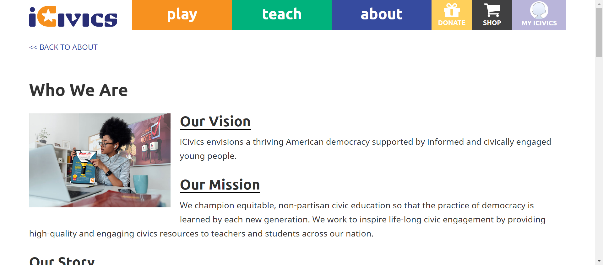 check_circle 3:54:50 PM The expected https://staging.icivics.org/who-we-are url as same as the https://staging.icivics.org/who-we-are actual url. 
check_circle 3:54:52 PM The mouse over by xpath : (//a[@href='/about'])[3] is performed. 
check_circle 3:54:52 PM The element [[ChromeDriver: chrome on WINDOWS (b4c8e1b0695411771d2a317cca41a5bc)] -> xpath: (//li[@class='our strategy']//a)[2]] is visible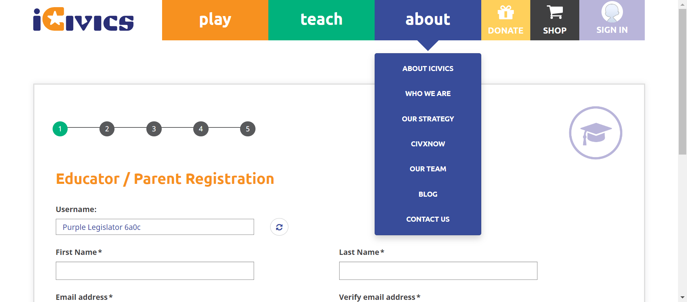 check_circle 3:54:52 PM The expected text contains the actual OUR STRATEGY 
check_circle 3:54:57 PM The Element OUR STRATEGY clicked 
check_circle 3:54:57 PM The expected https://staging.icivics.org/our-strategy url as same as the https://staging.icivics.org/our-strategy actual url. 
cancel 3:55:09 PM Unable to find the given element (//a[@href='/about'])[3] :org.openqa.selenium.TimeoutException: Expected condition failed: waiting for visibility of element located by By.xpath: (//a[@href='/about'])[3] (tried for 10 second(s) with 500 milliseconds interval) 
cancel 3:55:09 PM The Element with locator:XPATH&(//li[@class='civxnow']//a)[2] Not Found with value: (//li[@class='civxnow']//a)[2] 
-
-
HomepageHeader May 31, 2022 03:55:44 PM passMay 31, 2022 03:55:44 PM May 31, 2022 03:56:59 PM 0h 1m 15s+0ms
-
C17 - When you select a link in the submenu, are you navigated to the appropriate page?
May 31, 2022 05:13:51 PM 1h 16m 34s+419ms passStatus Timestamp Details check_circle 3:55:53 PM The mouse over by xpath : (//a[@title='Search Our Library'])[3] is performed. 
check_circle 3:55:54 PM The element [[ChromeDriver: chrome on WINDOWS (ced973bf034b69b298752a075b099774)] -> xpath: (//li[@class='first search our library']/a)[2]] is visible 
check_circle 3:55:54 PM The expected text contains the actual SEARCH OUR LIBRARY 
check_circle 3:56:14 PM The Element SEARCH OUR LIBRARY clicked 
check_circle 3:56:15 PM The expected https://staging.d9.icivics.org/teachers url as same as the https://staging.d9.icivics.org/teachers actual url. 
check_circle 3:56:15 PM The expected text contains the actual CONTENT SEARCH 
check_circle 3:56:16 PM The mouse over by xpath : (//a[@title='Search Our Library'])[3] is performed. 
check_circle 3:56:16 PM The element [[ChromeDriver: chrome on WINDOWS (ced973bf034b69b298752a075b099774)] -> xpath: (//a[@title='Scope and Sequence'])[2]] is visible 
check_circle 3:56:16 PM The expected text contains the actual SCOPE & SEQUENCE 
check_circle 3:56:20 PM The Element SCOPE & SEQUENCE clicked 
check_circle 3:56:20 PM The expected https://staging.d9.icivics.org/user/login?destination=/viewpdf%3Fpath%3D/sites/default/files/Scope%2520%2526%2520Sequence%25205.13.pdf url as same as the https://staging.d9.icivics.org/user/login?destination=/viewpdf%3Fpath%3D/sites/default/files/Scope%2520%2526%2520Sequence%25205.13.pdf actual url. 
check_circle 3:56:21 PM The expected text contains the actual Log in to iCivics check_circle 3:56:21 PM The mouse over by xpath : (//a[@title='Search Our Library'])[3] is performed.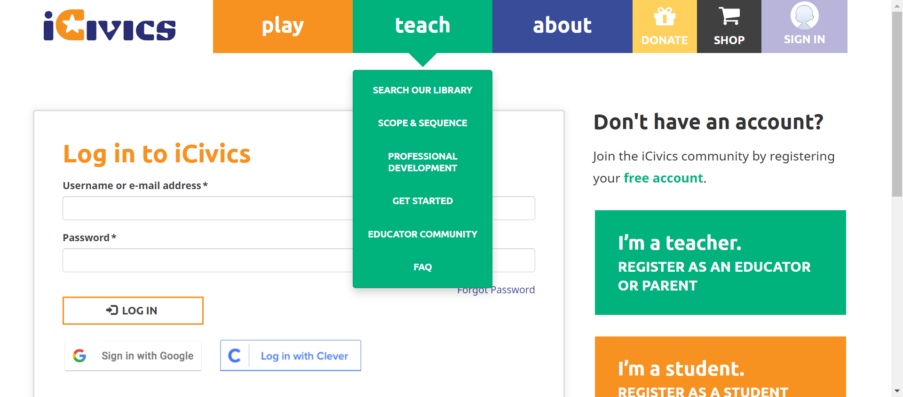 check_circle 3:56:21 PM The element [[ChromeDriver: chrome on WINDOWS (ced973bf034b69b298752a075b099774)] -> xpath: (//li[@class='professional development']//a)[2]] is visible 
check_circle 3:56:21 PM The expected text contains the actual PROFESSIONAL DEVELOPMENT 
check_circle 3:56:24 PM The Element PROFESSIONAL DEVELOPMENT clicked 
check_circle 3:56:24 PM The expected https://staging.d9.icivics.org/products/professional-development url as same as the https://staging.d9.icivics.org/products/professional-development actual url. 
check_circle 3:56:25 PM The expected text contains the actual Professional Development 
check_circle 3:56:25 PM The mouse over by xpath : (//a[@title='Search Our Library'])[3] is performed. 
check_circle 3:56:25 PM The element [[ChromeDriver: chrome on WINDOWS (ced973bf034b69b298752a075b099774)] -> xpath: (//li[@class='get started']//a)[2]] is visible 
check_circle 3:56:26 PM The expected text contains the actual GET STARTED 
check_circle 3:56:41 PM The Element GET STARTED clicked 
check_circle 3:56:41 PM The expected https://staging.d9.icivics.org/getstarted url as same as the https://staging.d9.icivics.org/getstarted actual url. 
check_circle 3:56:42 PM The expected text contains the actual Welcome to iCivics! 
check_circle 3:56:42 PM The mouse over by xpath : (//a[@title='Search Our Library'])[3] is performed. 
check_circle 3:56:42 PM The element [[ChromeDriver: chrome on WINDOWS (ced973bf034b69b298752a075b099774)] -> xpath: (//li[@class='educator community']//a)[2]] is visible check_circle 3:56:43 PM The expected text contains the actual EDUCATOR COMMUNITY 
check_circle 3:56:48 PM The Element EDUCATOR COMMUNITY clicked 
check_circle 3:56:54 PM The mouse over by xpath : (//a[@title='Search Our Library'])[3] is performed. 
check_circle 3:56:54 PM The element [[ChromeDriver: chrome on WINDOWS (ced973bf034b69b298752a075b099774)] -> xpath: (//li[@class='last faq']//a)[2]] is visible 
check_circle 3:56:54 PM The expected text contains the actual FAQ 
check_circle 3:56:58 PM The Element FAQ clicked 
check_circle 3:56:59 PM The expected https://icivics.zendesk.com/hc/en-us url as same as the https://icivics.zendesk.com/hc/en-us actual url. 
check_circle 3:56:59 PM The expected text contains the actual Getting Started 
check_circle 3:56:59 PM All links in the teach dropdown is verified sucessfully 
-
-
HomepageHeader May 31, 2022 03:57:17 PM passMay 31, 2022 03:57:17 PM May 31, 2022 03:58:58 PM 0h 1m 41s+0ms
-
C17 - When you select a link in the submenu, are you navigated to the appropriate page?
May 31, 2022 05:13:51 PM 1h 14m 53s+431ms passStatus Timestamp Details check_circle 3:57:26 PM The mouse over by xpath : (//a[@title='Search Our Library'])[3] is performed. 
check_circle 3:57:27 PM The element [[ChromeDriver: chrome on WINDOWS (5d7538d630cd077cd46dfce1926931d4)] -> xpath: (//li[@class='first search our library']/a)[2]] is visible 
check_circle 3:57:27 PM The expected text contains the actual SEARCH OUR LIBRARY 
check_circle 3:57:47 PM The Element SEARCH OUR LIBRARY clicked 
check_circle 3:57:48 PM The expected https://staging.d9.icivics.org/teachers url as same as the https://staging.d9.icivics.org/teachers actual url. 
check_circle 3:57:48 PM The expected text contains the actual CONTENT SEARCH 
check_circle 3:57:49 PM The mouse over by xpath : (//a[@title='Search Our Library'])[3] is performed. 
check_circle 3:57:49 PM The element [[ChromeDriver: chrome on WINDOWS (5d7538d630cd077cd46dfce1926931d4)] -> xpath: (//a[@title='Scope and Sequence'])[2]] is visible 
check_circle 3:57:49 PM The expected text contains the actual SCOPE & SEQUENCE 
check_circle 3:57:54 PM The Element SCOPE & SEQUENCE clicked check_circle 3:57:54 PM The expected https://staging.d9.icivics.org/user/login?destination=/viewpdf%3Fpath%3D/sites/default/files/Scope%2520%2526%2520Sequence%25205.13.pdf url as same as the https://staging.d9.icivics.org/user/login?destination=/viewpdf%3Fpath%3D/sites/default/files/Scope%2520%2526%2520Sequence%25205.13.pdf actual url. 
check_circle 3:57:54 PM The expected text contains the actual Log in to iCivics 
check_circle 3:57:55 PM The mouse over by xpath : (//a[@title='Search Our Library'])[3] is performed. check_circle 3:57:55 PM The element [[ChromeDriver: chrome on WINDOWS (5d7538d630cd077cd46dfce1926931d4)] -> xpath: (//li[@class='professional development']//a)[2]] is visible 
check_circle 3:57:56 PM The expected text contains the actual PROFESSIONAL DEVELOPMENT 
check_circle 3:58:15 PM The Element PROFESSIONAL DEVELOPMENT clicked 
check_circle 3:58:15 PM The expected https://staging.d9.icivics.org/products/professional-development url as same as the https://staging.d9.icivics.org/products/professional-development actual url. 
check_circle 3:58:16 PM The expected text contains the actual Professional Development 
check_circle 3:58:16 PM The mouse over by xpath : (//a[@title='Search Our Library'])[3] is performed. 
check_circle 3:58:16 PM The element [[ChromeDriver: chrome on WINDOWS (5d7538d630cd077cd46dfce1926931d4)] -> xpath: (//li[@class='get started']//a)[2]] is visible 
check_circle 3:58:17 PM The expected text contains the actual GET STARTED 
check_circle 3:58:41 PM The Element GET STARTED clicked 
check_circle 3:58:41 PM The expected https://staging.d9.icivics.org/getstarted url as same as the https://staging.d9.icivics.org/getstarted actual url. 
check_circle 3:58:41 PM The expected text contains the actual Welcome to iCivics! 
check_circle 3:58:42 PM The mouse over by xpath : (//a[@title='Search Our Library'])[3] is performed. 
check_circle 3:58:42 PM The element [[ChromeDriver: chrome on WINDOWS (5d7538d630cd077cd46dfce1926931d4)] -> xpath: (//li[@class='educator community']//a)[2]] is visible 
check_circle 3:58:42 PM The expected text contains the actual EDUCATOR COMMUNITY 
check_circle 3:58:47 PM The Element EDUCATOR COMMUNITY clicked 
check_circle 3:58:53 PM The mouse over by xpath : (//a[@title='Search Our Library'])[3] is performed. 
check_circle 3:58:54 PM The element [[ChromeDriver: chrome on WINDOWS (5d7538d630cd077cd46dfce1926931d4)] -> xpath: (//li[@class='last faq']//a)[2]] is visible 
check_circle 3:58:54 PM The expected text contains the actual FAQ 
check_circle 3:58:57 PM The Element FAQ clicked 
check_circle 3:58:57 PM The expected https://icivics.zendesk.com/hc/en-us url as same as the https://icivics.zendesk.com/hc/en-us actual url. 
check_circle 3:58:58 PM The expected text contains the actual Getting Started 
-
-
HomepageHeader May 31, 2022 05:13:51 PM passMay 31, 2022 05:13:51 PM May 31, 2022 05:14:03 PM 0h 0m 12s+97ms
-
C20 - When you select Teach again while the submenu is open, does the submenu close?
May 31, 2022 05:14:03 PM 0h 0m 9s+118ms passStatus Timestamp Details check_circle 5:14:00 PM The Element teach clicked 
check_circle 5:14:03 PM The Element teach clicked 
-
info_outline
check_circle
cancel
cancel
error
warning
redo
clear
Dashboard
Tests
11
Steps
340
Start
May 31, 2022 05:13:50 PM
End
May 31, 2022 05:14:04 PM
Time Taken
0h 0m 13s+163ms